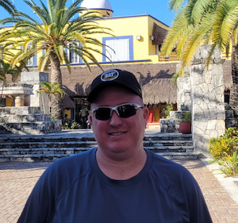

Lyle Hanchett | WDD 130
Hello, my name is Lyle Hanchett and I am from Gilbert, Arizona. I have lived here for 19 years. I grew up in New Mexico but i moved here for a job just before i got married. I have been married to my wife Katy for almost 19 years and we have 3 wonderful daughters(monsters. LOL). I served a mission in the Naga Philippines Mission. They announced a temple being built there in 2022. I work as a technician on Automated equipment in the food industry. This means everyday i get to work on different equipment at a different facility. Its never a dull moment when equipment is broke down. I enjoy playing games with my girls. we have been playing chess a lot lately. I also have a group of friends that gets together to play Pathfinder.